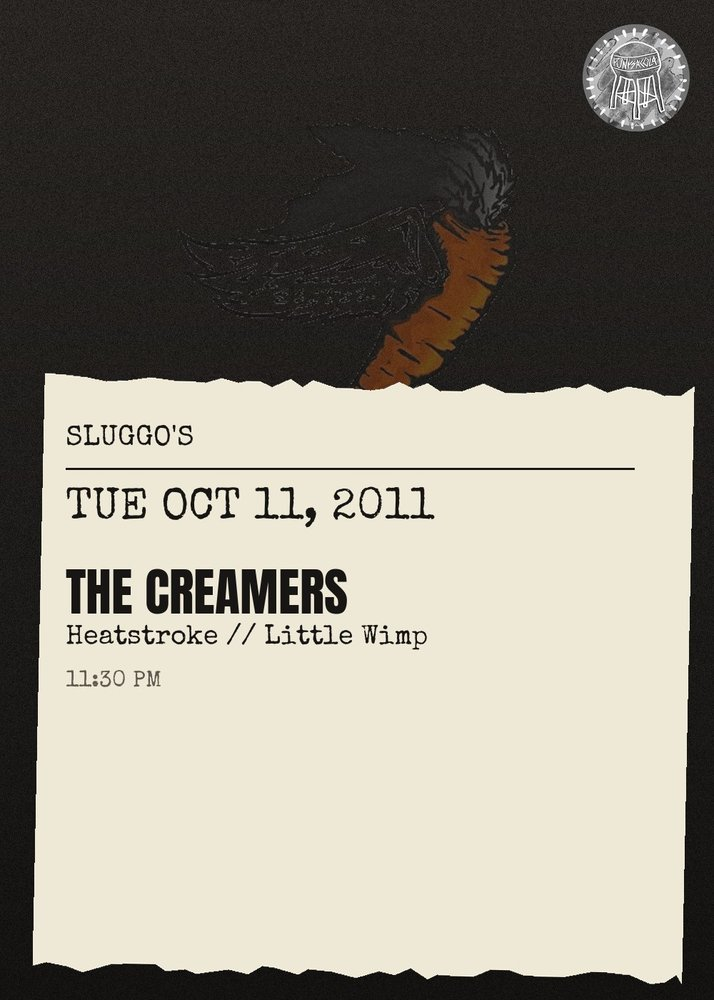

TUE OCT 11from the archive
The Creamers, Heatstroke, Little Wimp
11:30 PM
\t\nThe Creamers - \n\nFast Hardcore Punk hailing from Austin, Texas\nListen to tracks here: http:\/\/www.last.fm\/music\/The\u00252520Creamers?ac=the+creamers+\nWatch them here: http:\/\/www.youtube.com\/watch?v=TAp9Uc5XNEM\n\nHeat Stroke - \n\nHeavy, sludgy, power violence-y hardcore from Pensacola~*~\n\nLittle Wimp - \n\nDutch, Gina, Kevin and Barrett bursting out the sporadic, grungy jams that you know you will come to love.